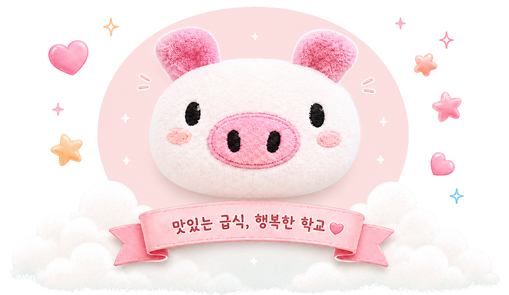
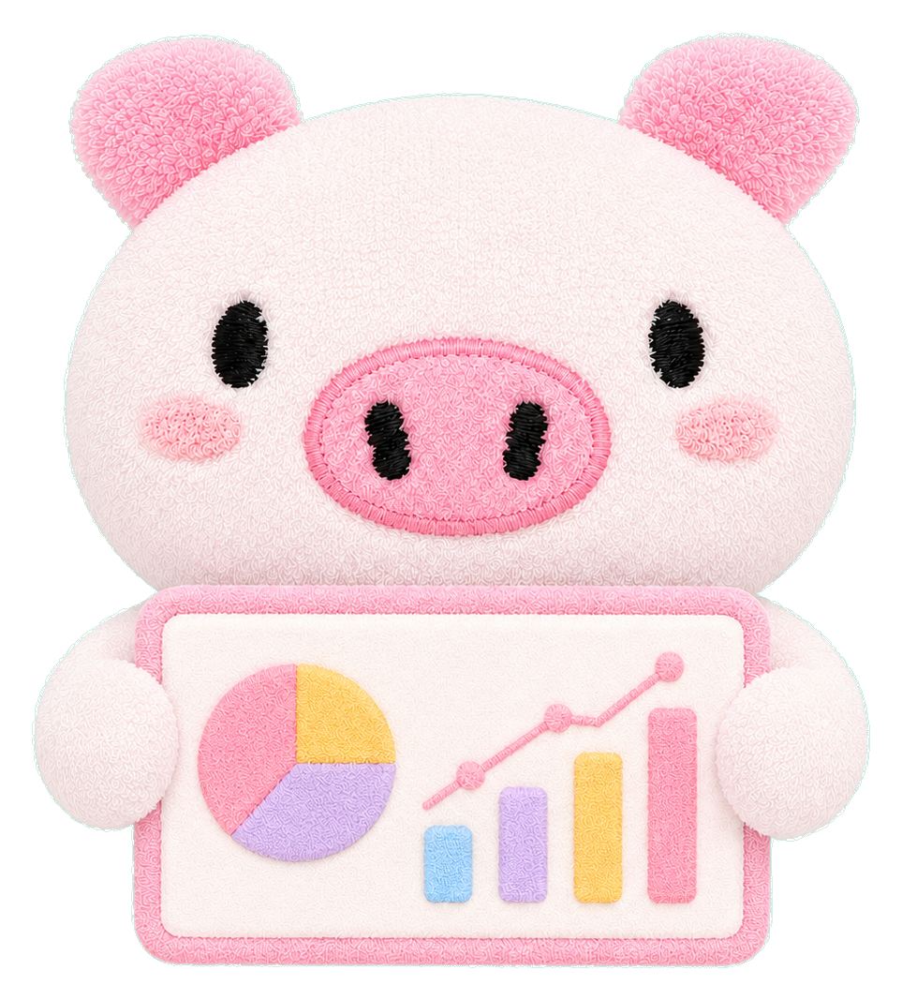

영양교사 꿀꿀이의
급식 업무 포털
급식 업무를 깔끔하게 정리해서 보기 위해 만든 꿀꿀이의 급식 업무 포털입니다.

포털에 접근하려면 비밀번호를 입력해 주세요.
급식 업무를 깔끔하게 정리해서 보기 위해 만든 꿀꿀이의 급식 업무 포털입니다.

작은 개선이 더 좋은 급식을 만듭니다.
검수부터 퇴근 전 마무리까지 하루 업무 흐름을 시간대별로 정리했습니다.
| 구분 | 시간 | 주요 업무 |
|---|---|---|
| 검수 | 07:30 |
|
| 조회 | 검수 직후 |
알레르기 안내 체크리스트
|
| 조리 | 오전~배식 전 |
|
| 배식 | 11:50~13:45 |
|
| 마무리 | 배식 후 오후 |
|
| 퇴근 | 15:30 |
| 주간 확인 |
|
|---|
매월 반복되는 급식 업무를 한눈에 확인할 수 있는 일정표입니다.
업무를 미리 살펴보고, 여유가 있을 때 식단도 미리 준비해 보세요.
| 시기 | 업무 | 확인 내용 |
|---|---|---|
| 식단 작성 전 | 기초 자료 확인 |
|
| 월 중순 | 입찰 준비 완료 |
|
| 입찰 완료 후 | 게시·발송 |
조리종사원에게 전달
|
| 업체 결정 후 | 발주 메일 보내기 |
|
| 월말 | 마감 및 결재 올리기 |
서류 결재 올리기
|
| 월 1회 | 위생교육 |
|
1년 동안 반복되는 급식 업무를 월별로 확인할 수 있도록 정리했습니다.

모바일에서는 표를 좌우로 밀어 보세요. 수정은 PC 버전 뷰에서 가능합니다.
| 월 | 업무 구분 | 업무 내용 |
|---|---|---|
| 2월 | 새 학기 준비 |
|
| 3월 | 학기 초 조사 | |
| 교육·연수 |
|
|
| 영양사 실태신고 |
|
|
| 학부모 모니터링 |
|
|
| 영양교육 |
|
|
| 4월 | 학부모 모니터링 |
|
| HACCP |
|
|
| 급식소위원회 |
|
|
| 5월 | 우유 수요조사 |
|
| 만족도·기호도 조사 |
|
|
| 급식 시간대별 지정좌석 |
|
|
| 여름 운영 준비 |
|
|
| 영양교육 |
|
|
| 6월 | 분기 교육 |
|
| 7월 | 영양교육 |
|
| 방학 준비 |
|
|
| 급식 시간대별 지정좌석 |
|
|
| 8월 | 2학기 시작 |
|
| 기기·설비 확인 |
|
|
| 9월 | 분기 교육 |
|
| HACCP |
|
|
| 식생활교육 |
|
|
| 10월 | 급식 시간대별 지정좌석 |
|
| 11월 | 겨울철 위생관리 |
|
| 예산 확인 |
|
|
| 12월 | 연말 마무리 |
|
| 새 학기 준비 |
|
|
| 시설·인력 일정 |
|
| 학기별 |
급식실 협의회(상반기, 하반기)
급식 공개의 날(상반기, 하반기)
|
|---|
조리방법 조회 엑셀 파일을 업로드하면 급식일별로 메뉴가 묶여 표시됩니다.
토큰을 저장한 기기에서는 엑셀 업로드 시 GitHub Pages 공용 식단 파일도 함께 갱신됩니다.
자주 사용하는 급식·행정 사이트를 모아두었어요.
업체 연락처, 홍보 영양사님 연락처와 전자 단가 링크를 정리했습니다.
| 업체군 | 업체명 | 전화번호 | 이메일 | 관리 |
|---|
| 업체명 | 홍보영양사님연락처 | 전자단가링크 | 메모 | 관리 |
|---|
조리종사원, 대체조리종사원이 숙지해야 할 사항을 정리했습니다.
아래 내용을 복사해서 문자로 보내고, 안내 링크를 함께 보내면 됩니다.
실무사님들, 먼저 함께 일하게 되어 감사드립니다.
학교급식은 영양교사 혼자 하는 일이 아니라 조리사님, 실무사님들과 함께 만들어 가는 일이라고 생각합니다.
저도 실무사님들께서 일하시기 조금이라도 편하도록 살피고, 아이들에게 건강하고 맛있는 급식이 나갈 수 있도록 노력하겠습니다.
처음 함께 일하게 되어 서로의 업무 방식이나 상황을 알아가는 시간이 필요할 수 있습니다. 부족한 부분이 있더라도 서로 이야기 나누며 맞춰 가면 좋겠습니다.
메뉴에 따라 평소보다 작업이 조금 더 생기는 날이 있을 수 있습니다.
예를 들면 피자를 자르거나, 메뉴 완성도를 위해 한 가지 작업을 더 해야 하는 경우가 있습니다.
이런 부분은 아이들에게 조금 더 맛있고 좋은 급식을 제공하기 위해 고민해서 정한 부분입니다.
작업이 많아지는 날에는 저도 현장 상황을 살피며 무리가 되지 않도록 함께 조정하겠습니다. 실무사님들께서도 가능한 범위에서 협조해 주시면 감사하겠습니다.
메뉴나 식재료에 대한 의견은 편하게 말씀해 주셔도 괜찮습니다.
현장에서 직접 조리하시면서 느끼는 부분은 실제 급식 운영에 큰 도움이 됩니다.
맛, 작업량, 조리 상태, 배식 편의성 등에 대해 의견을 주시면 다음 식단이나 같은 메뉴를 운영할 때 참고하겠습니다.
다만 학교급식은 정해진 예산, 품목, 규격 안에서 운영해야 하다 보니 당일에 식재료를 갑자기 바꾸거나 추가로 발주하기 어려운 경우가 많습니다.
당일 변경이 어려운 부분은 양해 부탁드리며, 말씀해 주신 의견은 이후 메뉴 운영에 잘 참고하겠습니다.
메뉴는 단가, 작업량, 조리 여건, 아이들 기호도, 메뉴 완성도 등을 함께 고려하여 정하고 있습니다.
어떤 식재료가 당장 눈에 띄게 많이 들어가지 않더라도 맛이나 전체적인 메뉴 완성도를 위해 사용하는 경우가 있습니다.
예를 들어 완제품을 사용하는 메뉴는 당일 작업량과 조리 시간을 고려한 경우일 수 있고, 소스에 들어가는 치즈가루나 향신 재료 등은 맛을 보완하기 위해 사용하는 경우가 있습니다.
조리 중 가루류가 뭉치거나 소스 농도가 맞지 않는 경우에는 불을 약하게 줄이고 조금씩 넣어 풀어 주시면 됩니다. 이런 부분도 조리 중 어려움이 있으면 편하게 말씀해 주세요.
급식은 맛뿐만 아니라 온도, 양, 배식 상태, 음식의 모양도 함께 중요하게 보이는 부분입니다.
아이들이 더 맛있게 먹을 수 있도록 조리 과정과 배식 상태를 함께 살펴 주시면 감사하겠습니다.
한 배식대에서 양이 부족하거나 많이 남을 것 같을 때는 옆 배식대 상황도 함께 확인하면서 조절해 주시면 좋겠습니다.
저도 전체 배식 상황을 살피며 필요할 때 함께 조정하겠습니다.
문의사항이 있을 때는 기본적인 부분은 먼저 조리사님이나 주변 실무사님들과 함께 확인해 주시고, 급하거나 바로 확인이 필요한 내용은 저에게 바로 말씀해 주세요.
저도 업무 중에는 검수, 식단, 발주, 서류 처리 등을 함께 진행하고 있어 바로 답변이 어려운 순간이 있을 수 있습니다.
그래도 꼭 확인이 필요한 내용은 놓치지 않고 챙기겠습니다.
앞으로 서로 배려하고 협조하면서 좋은 분위기로 함께 일했으면 좋겠습니다.
저도 실무사님들께서 일하시기 조금이라도 편하도록 살피고, 아이들에게 좋은 급식이 나갈 수 있도록 노력하겠습니다.
잘 부탁드립니다. 감사합니다.
Enter 새 항목 추가 · ↑↓ 항목 이동
이 화면을 나가면 수정한 내용이
사라질 수 있습니다.